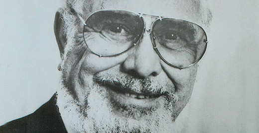

Haagen-Dazs® 는 1960년부터 비교할 수 없는 퀄리티의 아이스크림을 만들어 오고 있습니다. 창립자 루벤 매투스는 고품질의 엄선된 원료만을 사용하여 세계 최고의 아이스크림을 만드는 것을 비전으로 삼았습니다. 최고급 재료를 한 입 한 입씩 씹는특별한 경험으로 계속 변화시키고있습니다.

1960
하겐다즈의 탄생
1960년, 창립자 루벤 마터스는 부드러운 풍미와 크리미한 텍스쳐의 아이스크림을 만들기 위하여 온 힘을 다하여 전념 했습니다. 최고급 재료만을 사용하여 스스로 자부심을 느낄 수 있을만한 프리미엄 아이스크림을 만들어내어 초콜릿, 바닐라 그리고 커피 맛의 아이스 크림을 론칭하였습니다.
1966
6년간의 노력, 딸기맛 아이스크림의 탄생
루벤은 최고의 퀄리티로 딸기맛 아이스크림을 만들어야 한다고 생각 했습니다. 딸기 아이스크림을 만들기까지 6년의 시간이 걸릴 정도로, 좋은 원료를 사용하여 완벽한 맛의 아이스크림을 만드는 일에 온 열정을 다했습니다. 1966 년에 만들어진 딸기 아이스크림은 오늘날에도 많은 팬들의 사랑을 받고 있습니다.
1986
아이스크림바의 탄생
1986년 발렌타인 데이에 하겐다즈는 완전히 새로운 사랑을 받을 수 있는 아이스크림 바를 출시하였습니다. 스틱바가 출시 된 지 2년 만에 바닐라 밀크 초콜릿 아몬드 맛을 출시했습니다. 새로운바는 크리미 한 바닐라 아이스크림과 아몬드와 밀크 초콜릿을 결합하여 모든 매장과 팬들의 마음을 사로 잡았습니다.
1991
프로즌 요거트 / 샤베트 출시
1992년 하겐다즈는 완벽하게 균형잡힌 맛의 새로운 라인인 프로즌 요거트를 출시 하였습니다. 또한 2년뒤 1993년 과일을 좋아하는 팬들을 위해 하겐다즈 샤베트를 출시 하였습니다.
1998
환상의 맛 둘세 데 레체 출시
하겐다즈는 남미에서 둘세 데 레체를 발견했습니다. 그러나 아이스크림을 만드는 과저에서 식감과 맛의 균형을 찾는것이 어려웠습니다. 1988년 오랜 연구 끝에 하겐다즈만의 두껍고 풍부한맛의 카라멜을 개발 하였습니다.
2008
꿀벌을 위한 노력
하겐다즈가 매일 사용하는 많은 재료들 중 벌꿀이 3 분의 1을 차지하고 있습니다. 불행히도 꿀벌의 개체수가 기하급수적으로 줄어드는 어려움을 겪기 시작할 때 하겐다즈가 나서야 한다고 생각했습니다. 하겐다즈는 선도적인 연구 시설과 협력하여 꿀벌 연구에 $ 1,000,000 이상을 기부했습니다.
2013
크림같은 질감, 젤라또 출시
하겐다즈는 젤라또의 크림같은 질감에 반해 영감을 받아 자체 생산 공정을 만들었습니다. 하겐다즈 고유의 느낌과 이탈리아 감각이 어우러져 하겐다즈만의 젤라또가 완성되었습니다.
2016
GMO 없는 우리의 여정
하겐다즈는 제품에서 GMO 성분을 단계적으로 제거하고 모든 맛에서 모든 GMO 성분을 제거하려는 목표를 설정합니다. 2016 년에 우리는 초콜릿, 초콜릿 땅콩 버터, 커피, 파인애플 코코넛, 초콜릿 초콜릿 칩, 럼 건포도, 딸기, 바닐라, 바닐라 빈 등 GMO 성분을 사용하지 않은 최초의 9 가지 맛을 발표했습니다.